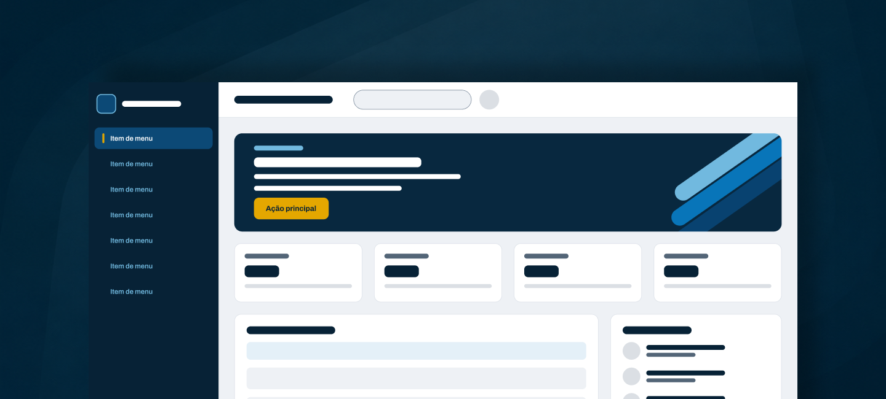
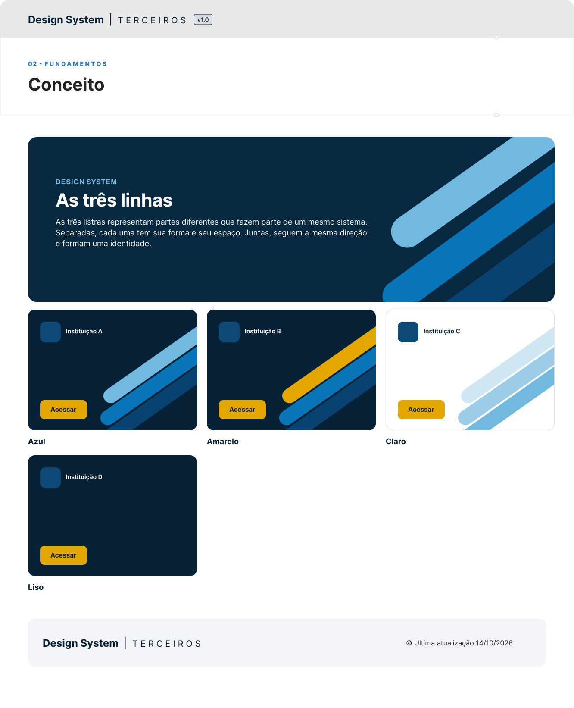
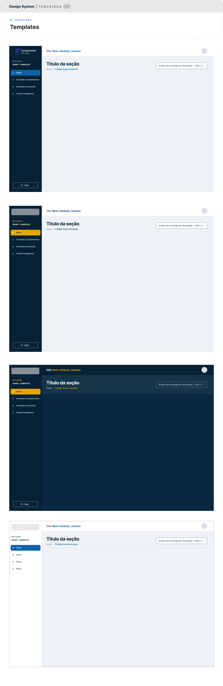
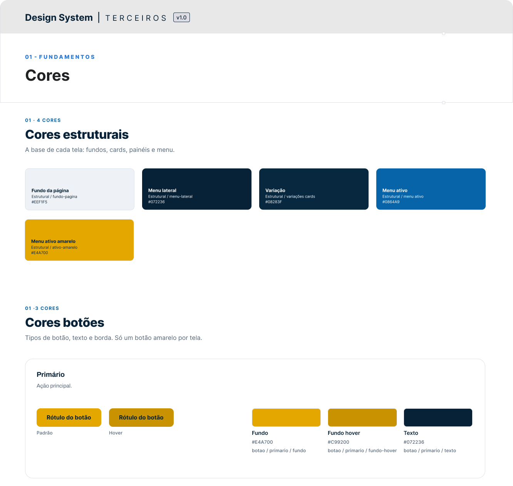
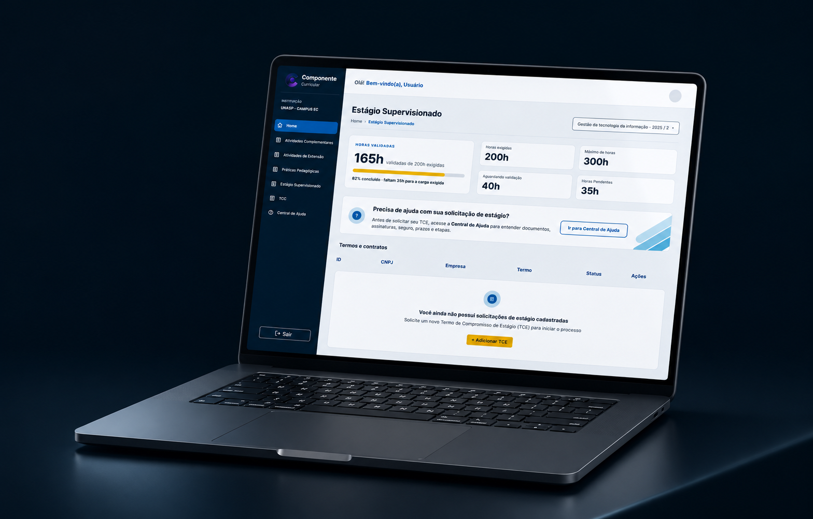

Componentes Curriculares
Uma plataforma para acompanhar atividades acadêmicas, estágios e extensão, desenvolvida para atender diferentes instituições de ensino adventistas.

capa.png · 1440 × 650 pxO desafio
O projeto começou com a proposta de evoluir um sistema acadêmico existente. Inicialmente, desenvolvi as interfaces utilizando o Design System institucional do UNASP.
Durante o processo, percebi que essa escolha poderia gerar uma percepção equivocada: como o produto seria utilizado por outras instituições, a identidade do UNASP poderia parecer uma imposição visual.
Propus, então, criar uma identidade independente para o UNASP TOTVS. A proposta foi aceita pela equipe, e as interfaces foram redesenhadas a partir dessa nova direção.
 primeira-versao.png · 700 × 525 px
primeira-versao.png · 700 × 525 px nova-versao.png · 700 × 525 px
nova-versao.png · 700 × 525 pxIdentidade visual
Pesquisei referências visuais da educação adventista e identifiquei o uso recorrente do azul e do amarelo. A partir dessas referências, desenvolvi tonalidades próprias e o conceito das três linhas: elementos diferentes que seguem uma mesma direção e formam uma identidade.

conceito.png · 1332 × 1642 pxTemplates
O sistema precisava ter uma identidade própria, mas também permitir aplicações em diferentes instituições.
Desenvolvi quatro templates e defini orientações para seu uso, priorizando o modelo padrão e reservando as outras versões para necessidades específicas de diferenciação, legibilidade e preferência de visualização.

templates.png · 1570 × 4810 px aplicacao-templates.png · 1822 × 1483 px
aplicacao-templates.png · 1822 × 1483 pxDesign System
Além da identidade visual, estruturei padrões de cores, componentes e estados de interação. Utilizei a fonte Inter e reaproveitei alguns padrões de tabelas existentes no UNASP, adaptando o que fazia sentido para o novo produto.

cores.png · 1332 × 1264 pxResultado final

resultado-final.png · 1568 × 1003 px